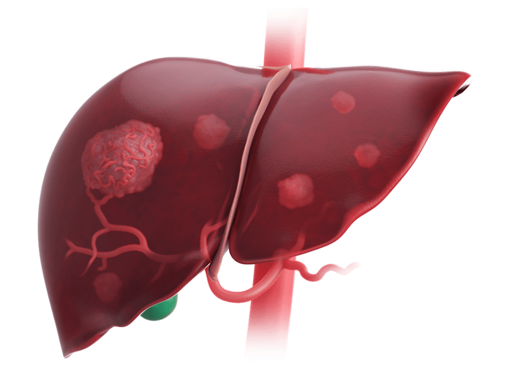
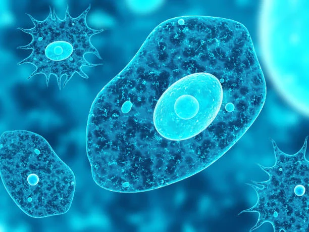
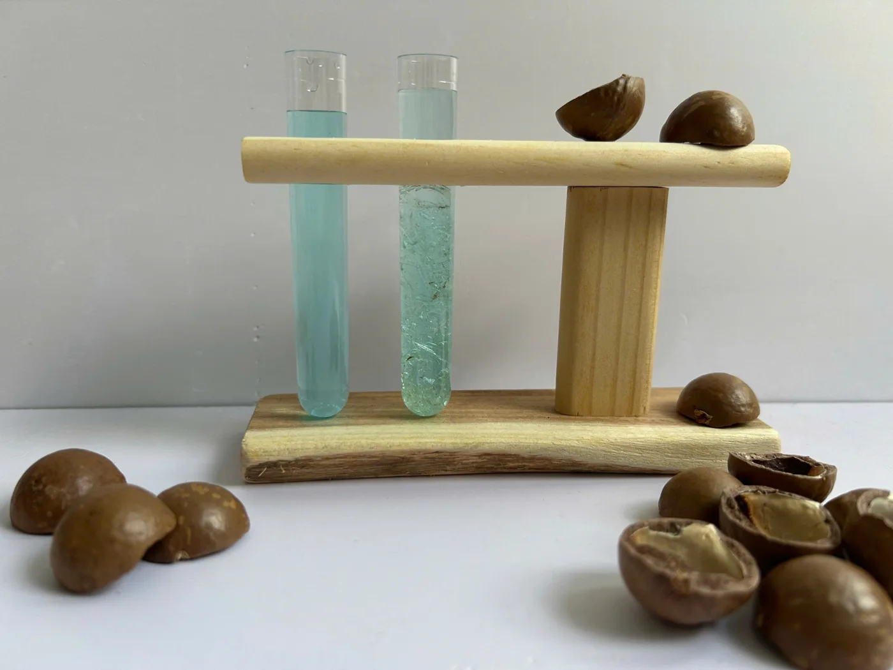
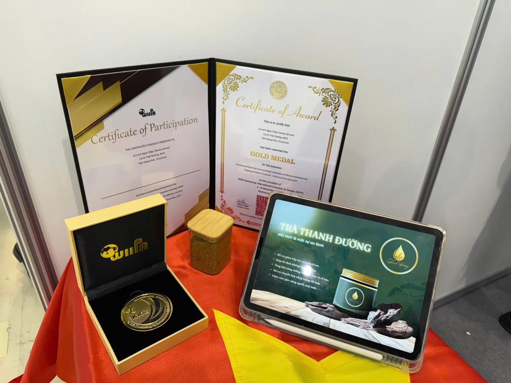
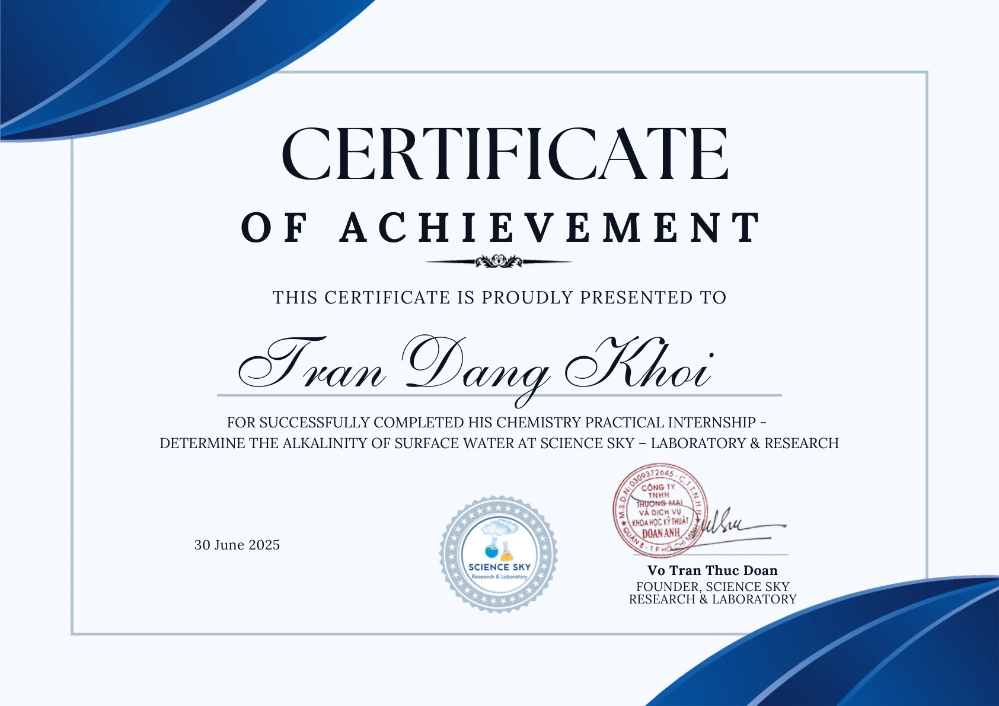
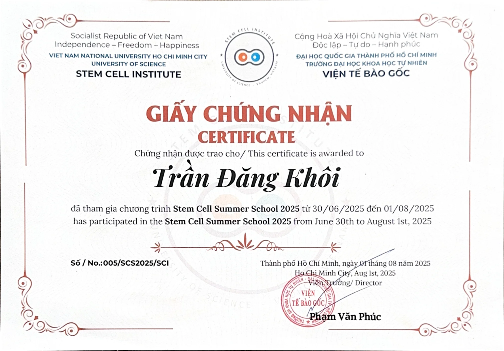

Learning through inquiry.
Biotechnology, applied biology, and science-driven innovation projects.

Recombinant Antigens for Early HCC Detection
Exploring recombinant antigen generation and antibody-production workflows for early HCC detection. Manuscript in preparation.
Read more →
Protozoa in Hydroponic Systems
Ongoing experiments on protozoa culturing and adaptability in a monitored hydroponic system.
Read more →
Cellulose Nanocrystals for Water Treatment
Silver Award-winning composite-film research involving cellulose nanocrystals, synthesis, and materials characterization.
Read more →
Functional Herbal Tea & Diabetic Enzymes
Gold Award-winning co-authored biochemical study of Cordyceps–Gymnema extracts, enzyme inhibition and functional tea formulation.
Read more →Scientific Exploration & Learning Experiences
Hands-on opportunities that helped me develop laboratory skills and explore scientific research.
Intern · Science Sky Laboratory & Research
Apr–Jun 2025
Completed a chemistry practical internship focused on determining the alkalinity of surface water. Practiced chemical analysis, titration, experimental planning, laboratory safety and equipment handling; also supported laboratory operations and the science center’s communications.
Chemistry Practical Internship Certificate · 30 June 2025

Stem Cell Summer School · VNUHCM–University of Science Stem Cell Institute
30 June–1 August 2025 · Summer training
Completed a five-week supervised biomedical summer training program covering stem cell biology, foundational laboratory techniques, cell-culture protocols, experimental data analysis, and laboratory safety.
Stem Cell Summer School 2025 · Certificate of Participation · 1 August 2025
